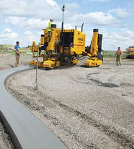

Architectural
Concrete work where the finish is part of the design.
↗Architectural. Structural. Heavy civil. Flatwork. Find the right capability for the job.
View capabilities ↗
PROJECT SCOPE / CONCRETE / IDAHODescribe the property, access, and type of concrete work.
Useful details: location · dimensions · access · drawings · preferred timing